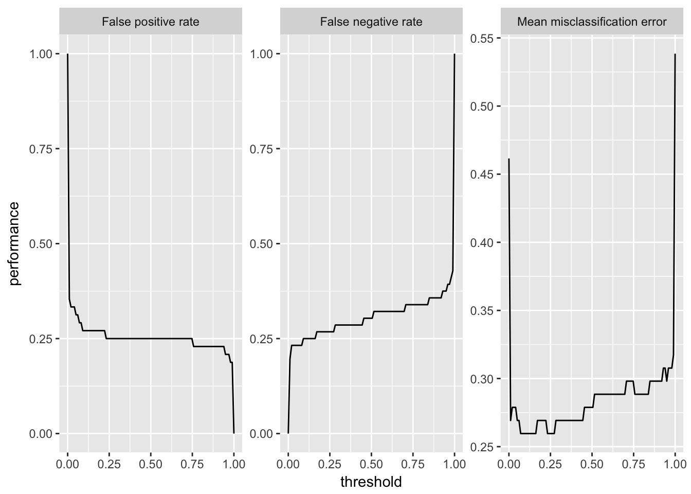
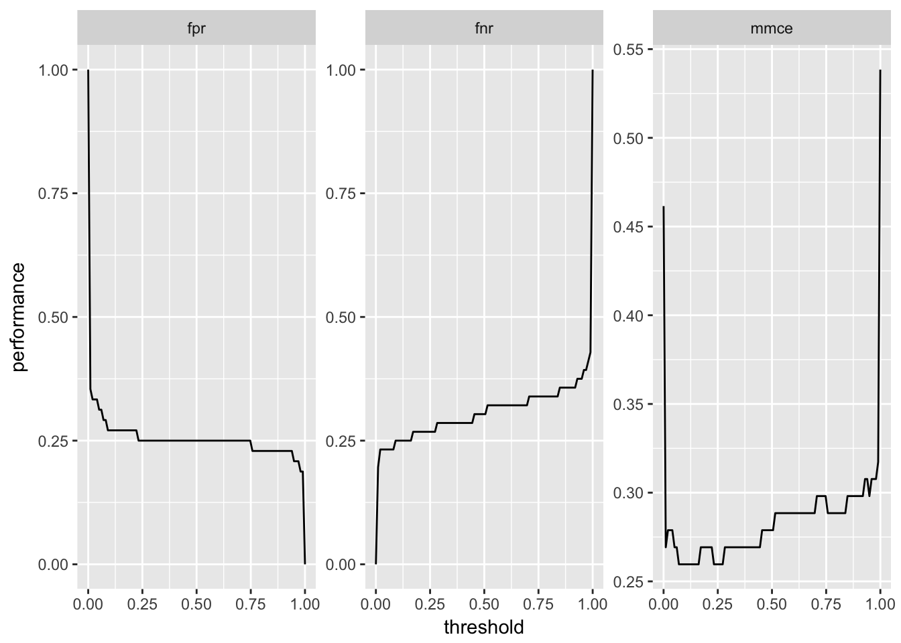
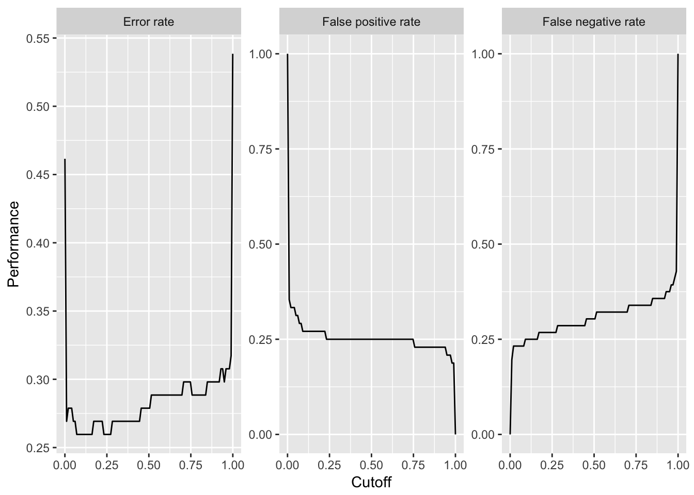
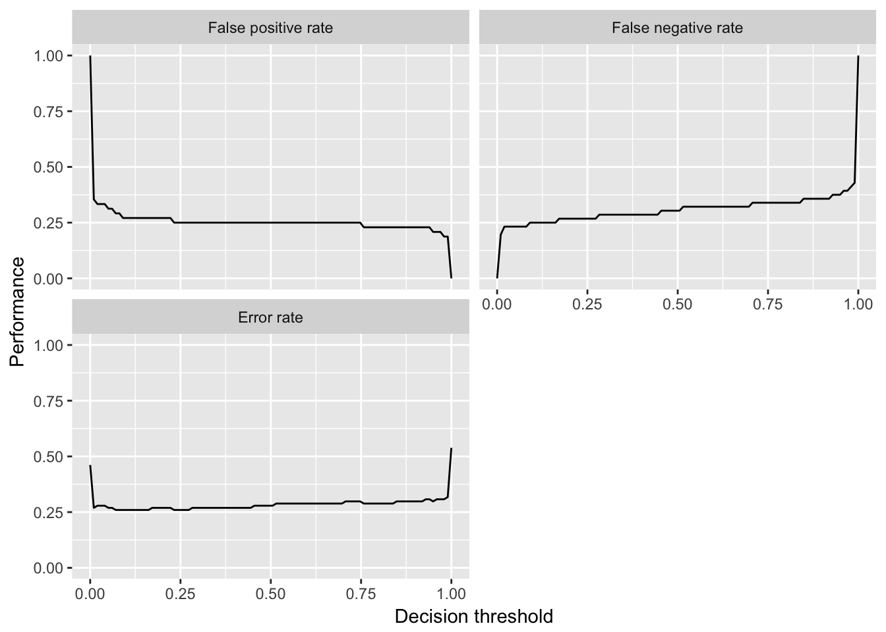
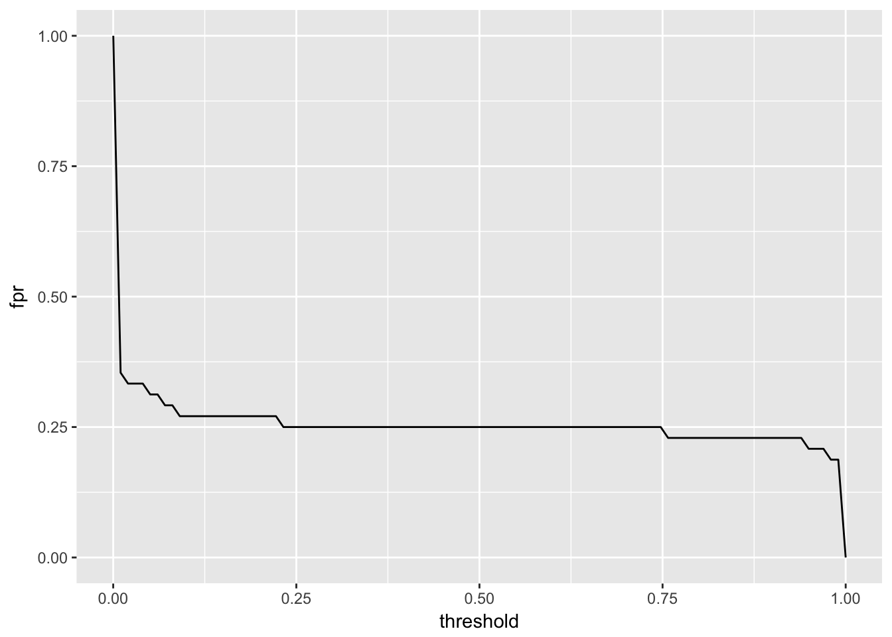
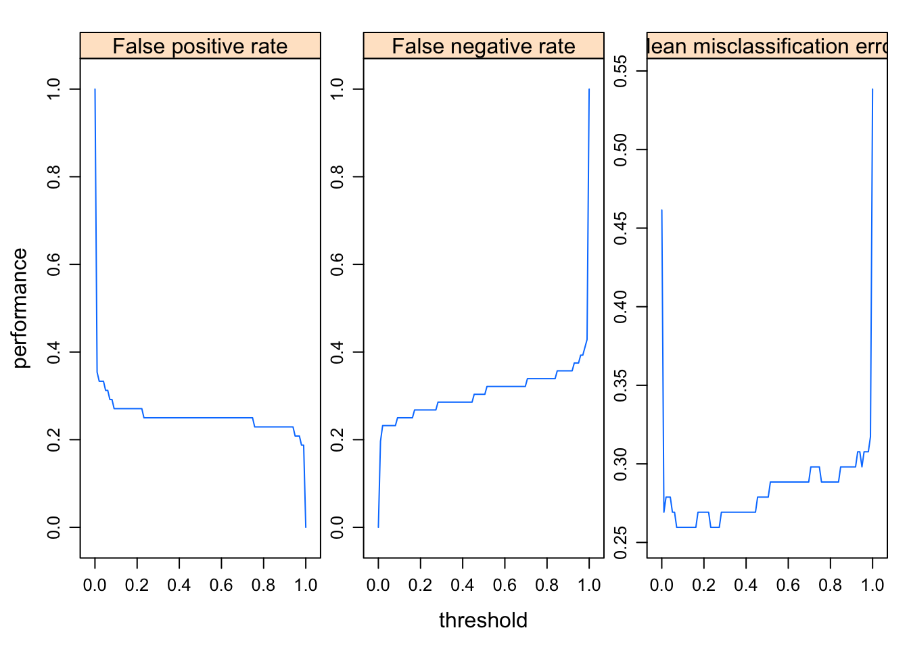
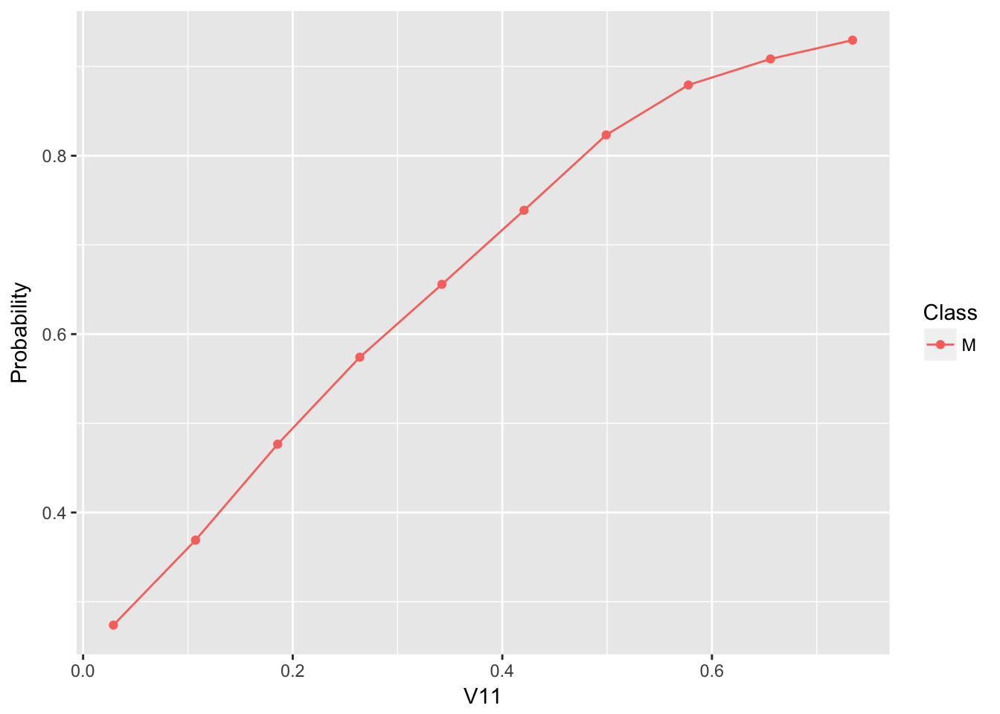
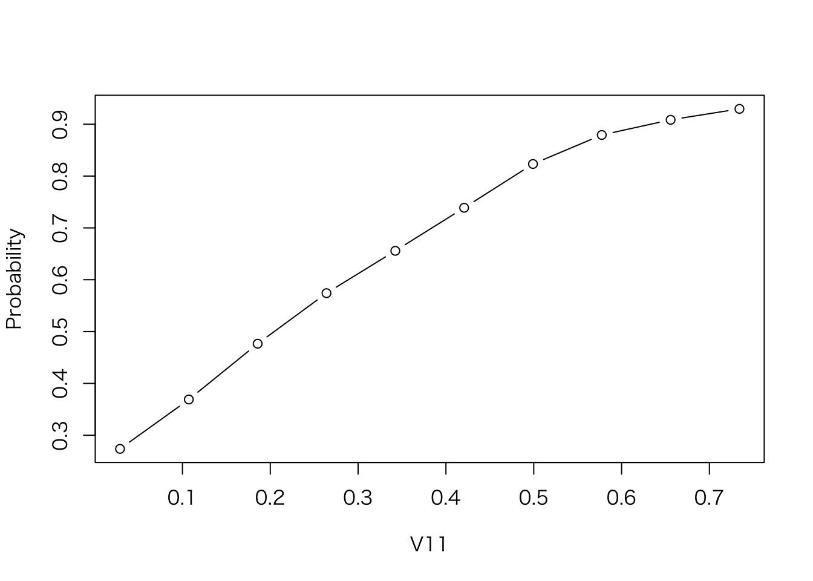

Section 12 いろいろな可視化
12.1 generation関数とplotting関数
mlrの可視化機能は、プロットのためのデータを生成するgeneration関数と、その出力を使ってプロットを作成するplotting関数から成っている。プロット関数はggplot2かggvisパッケージを使ってプロットを作成する(ggvisの方はまだ試験的段階にある)。
可視化機能をこのように分けたことで、ユーザーはgeneration関数を利用して容易にプロットのカスタマイズができるようになっている。plotting関数の中で行われる唯一のデータ変換はデータの成形である。成形されたデータには、plotting関数を呼び出すことで作成されるggplotオブジェクトからアクセスすることもできる。
それぞれの関数は次のように命名されている。
- generate関数は
generateから始まり、次に関数の目的がtitle caseで続き、最後にDataが付け加えられる。すなわち、関数名はgenerateFunctionPurposeDataといった具合になる。generate関数により作成されるオブジェクトはFunctionPurposeDataクラスである。 - plotting関数は
plotに関数の目的が続く形の名前となる。すなわち、plotFunctionPurposeといった具合だ。 ggvis用いたプロット関数名は末尾にGGVISを付加する。
12.1.1 例
まず、sonar.taskに対する2クラス分類問題で、分類性能を決定閾値の関数と見立ててプロットする例を示す。対応するgeneration関数はgenerateThreshVsPerfData関数であり、この関数により生成されるThreshVsPerfDataクラスのオブジェクトは$dataスロットにプロットするためのデータを含む。
lrn = makeLearner("classif.lda", predict.type = "prob")
n = getTaskSize(sonar.task)
mod = train(lrn, task = sonar.task, subset = seq(1, n, by = 2))
pred = predict(mod, task = sonar.task, subset = seq(2, n, by = 2))
d = generateThreshVsPerfData(pred, measures = list(fpr, fnr, mmce))
class(d)$> [1] "ThreshVsPerfData"head(d$data)$> fpr fnr mmce threshold
$> 1 1.0000000 0.0000000 0.4615385 0.00000000
$> 2 0.3541667 0.1964286 0.2692308 0.01010101
$> 3 0.3333333 0.2321429 0.2788462 0.02020202
$> 4 0.3333333 0.2321429 0.2788462 0.03030303
$> 5 0.3333333 0.2321429 0.2788462 0.04040404
$> 6 0.3125000 0.2321429 0.2692308 0.05050505いま作成したオブジェクトをmlrの組み込み関数を使ってプロットするには、plotThreshVsPref関数を用いる。
plotThreshVsPerf(d)
デフォルトでは各パネルのラベルには性能指標の名前が使用される。これは他のplotting関数でも同様である。名前はMeasureクラスのオブジェクトの$nameスロットに格納されている。
fpr$name$> [1] "False positive rate"$nameの代わりに$idスロットの値をプロットに使うこともできる。
fpr$id$> [1] "fpr"この値を使う場合は、pretty.names = FALSEを指定する。
plotThreshVsPerf(d, pretty.names = FALSE)
12.1.2 プロットのカスタマイズ
組み込みのプロットや、生成データに基いて作成した独自のプロットは簡単にカスタマイズできる。
おそらく、ほとんどの場合ラベルや注釈を変更したいと思うだろう。ggplotオブジェクトに対してこれを行うためには、ylabやlabellerなどの関数を利用する。さらに、生成データやggplotオブジェクトに含まれるデータを変更するという手もある。これは大抵の場合、列名や水準名の変更である。
先程のプロットの軸と各パネルのラベルを変更してみよう。
例えば、次のような変更を施したいとする。
- パネルの表示順序を変更し、
mmceを最初にしたい。 - パネルのラベル名が長いので、例えば
Mean misclassification errorをError rateにしたい。
library(ggplot2)
plt = plotThreshVsPerf(d, pretty.names = FALSE)
plt$data$measure =
factor(plt$data$measure,
levels = c("mmce", "fpr", "fnr"), # 水準の順序の変更
labels = c("Error rate", "False positive rate", "False negative rate")) # 水準名の変更
plt +
xlab("Cutoff") + # x軸ラベルの変更
ylab("Performance") #y軸ラベルの変更
labeller関数はfacet_wrapかfacet_gridと合わせて使う必要があるが、パネルの並べ方を変更したり、軸のリミットに影響を与えたいと考えている場合には便利である。
plt = plotThreshVsPerf(d, pretty.names = FALSE)
measure_names = c(
fpr = "False positive rate",
fnr = "False negative rate",
mmce = "Error rate"
)
plt +
facet_wrap(~measure, labeller = labeller(measure = measure_names), ncol = 2) +
xlab("Decision threshold") + ylab("Performance")
plotting関数を使わずに、generation関数で生成したデータに基いてプロットを作成することもできる。
ggplot(d$data, aes(threshold, fpr)) + geom_line()
generation関数がプロット関数と分かれていることにより、graphicsやlatticeパッケージを用いたプロットを作成する場合にも対応できる。以下にlatticeでplotThreshVsPrefと同様のプロットを作成する例を示そう。
lattice::xyplot(fpr + fnr + mmce ~ threshold,
data = d$data,
type = "l",
ylab = "performance",
outer = TRUE,
scales = list(relation = "free"),
strip = lattice::strip.custom(
factor.levels = sapply(d$measures, function(x) x$name),
par.strip.text = list(0.8)
))
もう一つ、plotPartialDependenceを使ってプロットを作成したのち、ggplotオブジェクトからデータを取り出してgraphics::plotによる伝統的なプロットも作成する例を見てみよう。
sonar = getTaskData(sonar.task)
pd = generatePartialDependenceData(mod, sonar, "V11")
plt = plotPartialDependence(pd)
plt
plot(Probability ~ Value, data = plt$data, type = "b", xlab = plt$data$Feature[1])
12.2 利用可能なgeneration関数とplotting関数
以下に現在利用可能なgeneration関数およびplotting関数と、その詳細を説明するチュートリアルページへのリンクの一覧を示す。
なお、下記の点に注意してもらいたい。
plotTuneMultiCritResultなどはgeneration関数が無いため、ここでは言及していない。plotThreshVsPref及びplotROCCurvesはいずれもgenerateThreshVsPrefDataの結果を扱える。plotPartialDependence及びplotPartialDependenceGGVISは、いずれもgeneratePartialDependenceData及びgenerateFunctionalANOVADataの結果の両方を扱える。